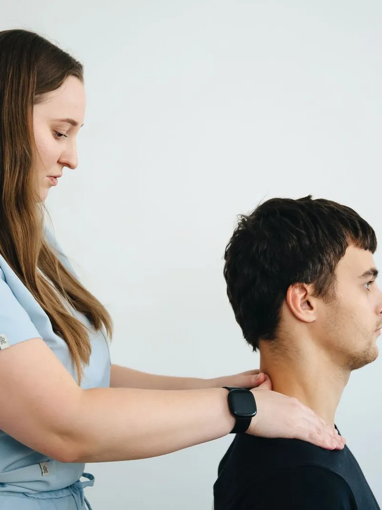
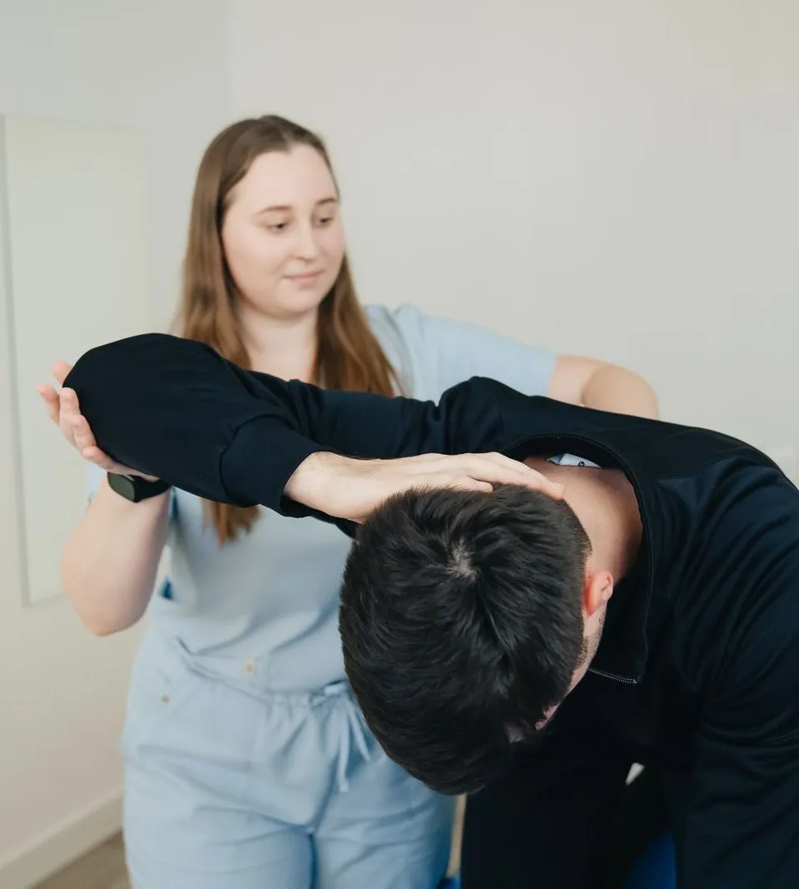
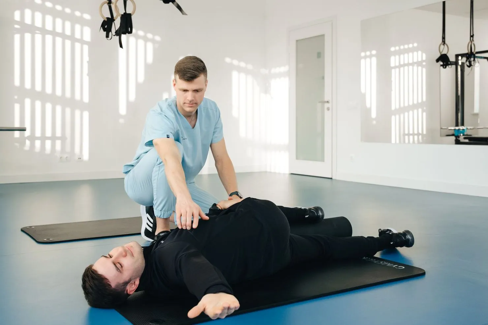
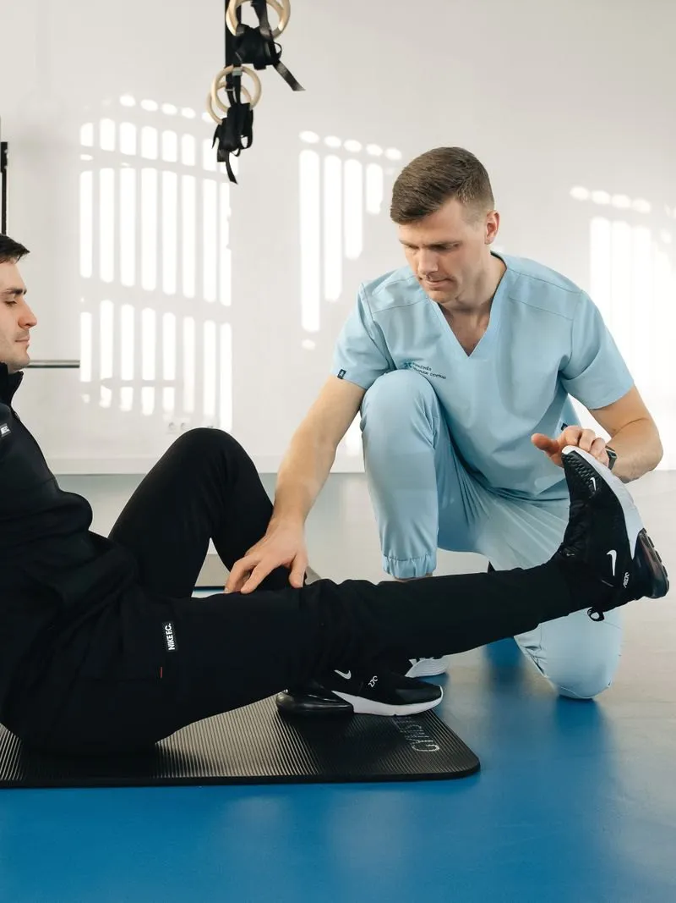
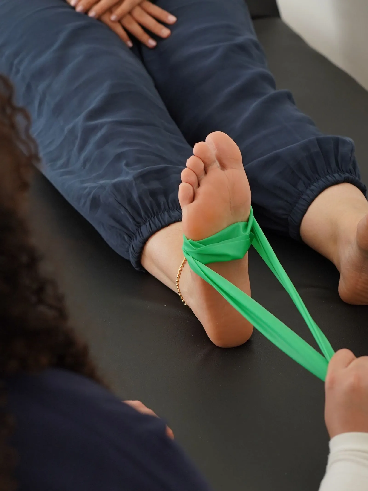
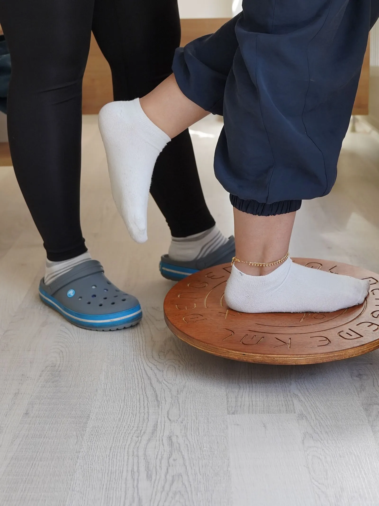
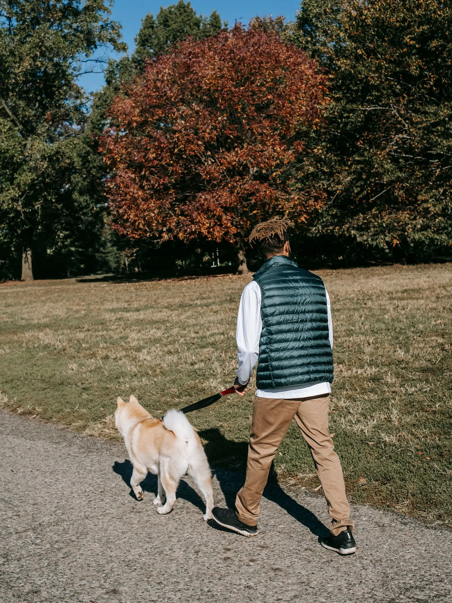

4–7 visits7
wk 0wk 6wk 12
Back and neck
1 / 3Hannah Voss, PT. Opened the clinic in 2019.
Paid so far: $135 · $240 · $345 · $450 · $555

212 Woolwich St, Guelph · Mon–Sat · no referral needed
Week 0
$135. You leave with a plan in writing, a likely number of visits and what each will cost. Take it anywhere; it's yours.
You tell us
When it started, what makes it worse, what you want to get back to.
We watch you move
Simple tests, nothing that should hurt more than it already does. Say stop and we stop.
We explain what we think it is
In plain words, with what we're not sure about.
You leave with the plan
Exercises for home, a visit count, the cost. Most back and neck courses last year took five visits.

Weeks 1–6
The same line as the chart at the top; each dot is a visit in that clinician's usual course last year. All three are registered with the College of Physiotherapists of Ontario.

Hannah Voss, PT. Opened the clinic in 2019.

Daniel Marek, PT. Runners, lifters, hockey and ball players. Saturdays.

Ines Carvalho, PT. Works from your surgeon's protocol.
Week 3
Somewhere around the third week most people have a bad day or two. It doesn't mean it isn't working.
Keep moving gently, do the easy half of your exercises, and message us: we'll call you back for ten minutes, free.
Don’t wait for us if:
you have numbness between the legs, or new trouble passing or holding urine. Go to emergency now.
you have a fever with back pain, or pain that wakes you every night. See a doctor today.
Weeks 6–12
The last weeks are strength, then balance, then whatever you came in wanting back: the garden, the 40‑minute walk, the Sunday game.
The last visit is a plan for the next year. We tell you when you’re done.
Strength first, then balance, then the thing itself, with fewer visits as the line flattens.


Prices and cover
We bill these four plans directly, so you pay only your share: Sun Life, Manulife, Canada Life and Green Shield. For any other plan we give you a receipt to claim.
No referral is needed in Ontario. Some extended-health plans ask for a doctor's note before they pay, so check yours. Cancel with 24 hours' notice.
The receipt under the chart, added up
| Whole course · CADA whole course: first assessment plus 45‑minute follow-ups | CAD | |
|---|---|---|
| 4 visitsa quick sports strain | a quick sports strain | $450 |
| 5 visitsthe usual back and neck, the chart above | the usual back and neck, the chart above | $555 |
| 7 visitsa slower back | a slower back | $765 |
| 12 visitsafter a knee or hip replacement | after a knee or hip replacement | $1,290 |
| Per visit | ||
| First assessment60 min | 60 min | $135 |
| Follow-up45 min | 45 min | $105 |
| Short follow-up30 min | 30 min | $75 |
| Check-in call10 min, between visits | 10 min, between visits | Free |
Questions
Each one is keyed to where you are on the line. Anything else: call 519‑555‑0157, Mon–Fri, 8 to 4.
Do I need a referral?
Not in Ontario. Some insurance plans ask for a doctor's note before they pay; check yours.
Do you see children?
From 12, with a parent at the first visit.
What should I wear?
Something you can move in. Shorts if it's your knee, a vest top if it's your shoulder.
Will it hurt more?
It can be sore for a day after. Nothing should be worse than what you came in with. Say stop and we stop.
When can I come in?
Monday to Saturday: until 7 pm on Monday, Tuesday and Thursday, and Saturday mornings with Daniel. Saturdays go first.
What if I need to cancel?
Give us 24 hours on Jane or by phone and there's no charge.
Week 0 starts here
212 Woolwich Street, Guelph, ON N1H 3V6
Ground floor, side door. A treatment room and a rehab gym. Parking on the street.
Phone answered Mon–Fri, 8 to 4.
wk 0 · you are here: 7
212 Woolwich Street, Guelph
Open in Maps ↗